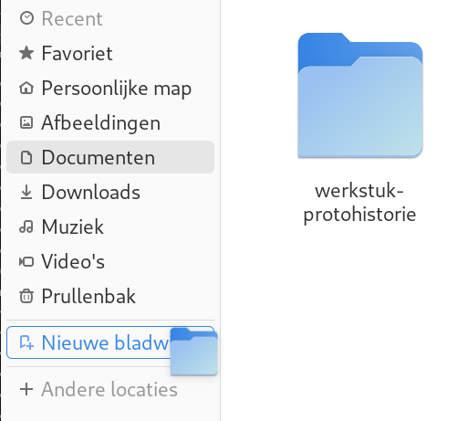

Aanmelden en afmelden
Meld u aan met het account (gebruikersnaam=tux, wachtwoord=tux)
Afmelden
Klik op 
Klik op 
Klik op “Afmelden …”
Bevestig in de popup
Log opnieuw aan
Schermbeveiliging activeren
Activeer de schermbeveiliging met SUPER+L
Maak de computer weer los door het wachtwoord van gebruiker Tux in te voeren: tux
Hulp openen en sluiten 1
Open hulp met SUPER+F1
Sluit Hulp met ALT+F4
Hulp openen en sluiten 2
Open hulp met SUPER+6
Sluit Hulp met kruisje rechtsboven
Hulp openen en sluiten 3
Open Hulp met SUPER, type hulp en druk ENTER
Sluit de hulp met CTRL+W
Hulp openen en sluiten 4 (moeilijk)
Open de hulp door op SUPER te drukken, en dan op het reddingsboei symbool op de dash te klikken
Gebruik CTRL-S en zoek op ‘sneltoetsen’, ga naar ‘Sneltoetsen > instellen’
Ga naar beneden naar ‘Vooraf gedefinieerde sneltoetsen’
Klap ‘Systeem’ open en zoek de sneltoets voor ‘Toepassingenmenu openen’.
Gebruik deze toets. Sluit de hulp dan met ENTER of SPATIEBALK.
Ga activiteiten modus in en verlaat haar onverrichter zake weer (zes keer)
Met het toetsenbord SUPER
Verlaten met ESC of SUPER
Verlaten via de knop 
Met de muis
Verlaten met ESC
Verlaten via SUPER
Verlaten via de knop
Open de samenvatting van deze cursus:
Druk SUPER in
Type samenv en ENTER
Druk CTRL+W om haar weer te sluiten
Ga applicatie modus in en verlaat haar onverrichter zake weer
Ga binnen via SUPER+A
Verlaten via SUPER
Verlaten via ESC ESC
Verlaten via
Ga binnen via
Verlaten via SUPER
Verlaten via ESC ESC
Verlaten via
Ga applicatie modus binnen op een wijze naar keuze en
Sleep firefox  naar het eerste (linker) werkblad
naar het eerste (linker) werkblad
Sleep kaarten  naar het tweede (rechter) werkblad
naar het tweede (rechter) werkblad
Ga naar gewone modus op een wijze naar keuze
Sluit beide toepassingen
ALT+F4 om firefox te sluiten
SUPER+PageDown om naar tweede werkblad te gaan
ALT+F4 om kaarten te sluiten
Open en sluit het notificatie venster
Open met een klik op 
- Sluit met een klik op
Open met SUPER+V
Sluit met ESC
Sluit met SUPER+V
Open het systeemmenu en sluit haar onverrichter zake weer
Open met klik op
- Sluit met klik op
Open met klik op
- Sluit met
ESC
Netwerk uitschakelen en opnieuw inschakelen
Start en ga naar tldp.org.
Open het systeemmenu
Klik  , knop wordt grijs
, knop wordt grijs
Sluit systeemmenu
Start en ga naar debian.org, dit zal niet gaan
Klik  , knop krijgt weer kleur
, knop krijgt weer kleur
Sluit systeemmenu
Ga naar en herlaad de pagina met F5
Afmelden op twee manieren
Met muis
Klik op
Klik op
Klik op “Afmelden …”
Annuleer in de popup
Met toetsenbord
SUPER afme ENTER
Annuleer in de popup door SPATIEBALK of ESC
Uitschakelen op drie manieren
Met ALT+CTRL+DELETE
- Annuleer in de popup met
ESC
Met muis
Klik op
Klik op
Klik op “Uitschakelen …”
Annuleer in de popup met ESC
Met toetsenbord
SUPER uits ENTER
Annuleer in de popup door SPATIEBALK of ESC
Herstarten op twee manieren
Met muis
Klik op
Klik op
Klik op “Herstarten …”
Annuleer in de popup met ESC
Met toetsenbord
SUPER hersta ENTER
Annuleer in de popup door SPATIEBALK of ESC
Sneltoetsen toevoegen. Open sneltoetsen in de Instellingen door:
SUPER snelt ENTER
Klik op “Sneltoetsen weergeven en aanpassen”
Ken onder de afdeling “Starters” SUPER+E aan “Persoonlijke map”
Ken onder de afdeling “Starters” SUPER+C aan “Rekenmachine starten”
Ken onder de afdeling “Starters” SUPER+I aan Instellingen
Aangepaste sneltoetsen toevoegen. Open sneltoetsen in de Instellingen.
Open de afdeling “Aangepaste sneltoets” (onderaan).
SUPER+SHIFT+I toekennen aan “Afstellingen”
Klik op de + onderaan
Vul onder “Naam” Afstellingen in
Vul onder “Opdracht” gnome-tweaks in
Klik op “Sneltoets instellen” en druk SUPER+SHIFT+I
Ken ALT+CTRL+T toe aan de opdracht gnome-terminal onder de naam Terminal.
Sneltoetsen opzoeken. Open de sneltoetsen instellingen zoals in beschreven in de eerste oefening.
Wat is de toets voor maximaliseren
Wat is de toets voor herstellen
Open en sluit terminal 1
Open met ALT+CTRL+T
Sluit met CTRL+D (betekent end of file in UNIX)
Open en sluit terminal 2
Open SUPER, ter, ENTER
Sluit met CTRL+D
Open en sluit terminal 3
Ga in applicatie modus met SUPER+A
Klik op het terminal venster icon 
Sluit het venster met de muis door op het kruisje rechtsboven te klikken
Open en sluit terminal 4
Ga in applicatie modus met de muis:
Klik op
Klik op de 3x3 puntjes op de dash 
Sleep het naar het eerste werkblad
Klik op om applicatie modus te verlaten
Klik op een willekeurige plek van het terminalvenster
Sluit het terminalvenster door ALT+F4 in te drukken
Open met ALT+CTRL+T een terminalvenster
Gebruik het toepassingmenu om een extra terminalvenster te openen
SUPER+F10
ENTER op “Nieuw venster”
Sluit het tweede terminalvenster af via het toepassingsmenu
SUPER+F10
Gebruik de pijltjes toetsen om naar “Afsluiten” te komen
Druk SPATIEBALK
Herhaal dit voor het eerste terminalvenster
Open en sluit twee firefox vensters
Druk SUPER+1 om firefox te openen
Maak een nieuw venster aan via het toepassingsmenu
SUPER+F10
ENTER op “Nieuw venster”
Sluit beide vensters met het toepassingsmenu
SUPER+F10
Gebruik de pijltjes toetsen om naar “Afsluiten” te komen
Druk SPATIEBALK
Open en sluit twee LibreOffice writer vensters met het bestandsmenu
Druk SUPER+3
Druk F10 om de menubalk voor Writer te activeren
Druk ↓
Druk →
Druk SPATIEBALK
Druk F10 om de menubalk voor Writer te activeren
Druk ↑ om snel bij “Afsluiten” te komen
Druk SPATIEBALK
Open twee LibreOffice writer vensters en sluit ze één voor één
Druk SUPER+3
Druk CTRL+N om via de sneltoets voor een nieuw venster van LibreOffice een tweede venster te openen
Druk CTRL+W om het tweede venster te sluiten
Druk CTRL+W om het eerste venster te sluiten
Druk CTRL+Q om LibreOffice af te sluiten
Open twee LibreOffice writer vensters en sluit ze één voor één
Druk SUPER+3
Druk CTRL+N om via de sneltoets voor een nieuw venster van LibreOffice een tweede venster te openen
Klik op het kruisje rechtsboven van het tweede venster
Klik op het kruisje rechtsboven van het eerste venster
Open en sluit een LibreOffice calc venster
Druk SUPER spread ENTER
Sluit met ALT+F4
Open en sluit een eenvoudige (platte) tekst editor
Druk SUPER tekst ENTER
Sluit met ALT+F4
Open een rekenmachine en reken 6 keer 7 uit
Druk SUPER+C
Druk 6*7 ENTER
Sluit met ALT+F4
Reken 2 + 4 x 10 uit via het zoekvak
Druk SUPER 2+4*10
Druk SUPER om in normale modus terug te keren
Open een tekst editor via applicatie modus
Ga met de muis naar applicatie modus (twee stappen)
Klik rechts op > om naar de tweede pagina te komen
Klik op 
Open een tweede venster met CTRL+N
Sluit tweede venster met ALT+F4
Sluit eerste venster met ALT+F4
Open een tekst editor via applicatie modus
Druk SUPER+A
Druk PageDown om op de tweede pagina te komen
Sleep naar het eerste werkblad
Druk tweemaal ESC om in normale modus te komen
Sluit het venster met ALT+F4
Open en sluit twee firefox vensters met de muis
Ga activiteiten modus in door op te klikken
Klik op op de dash
Ga opnieuw activiteiten modus in door op te klikken
Klik met CTRL ingedrukt op op de dash
Verlaat activiteiten modus door op te klikken
Klik de beide vensters dicht door op het kruisje rechtsboven te klikken
- Noem twee manieren waarop dit sluiten van beide vensters in één keer had gekunt (er zijn drie manieren)
Som manieren waarop een toepassing, waaraan een sneltoets is toegekend, maar niet op de dash staat, kan worden gestart (vier manieren)
Som manieren waarop een toepassing, waaraan een sneltoets is toegekend en op de dash staat, kan worden gestart (vijf manieren)
Op welke wijzen kan een extra venster worden geopend van toepassingen (die extra vensters toestaan)? (vier manieren)
Wat is de toetscombinatie waarmee een venster wordt gesloten?
Wat is een gangbare toetscombinatie waarmee een toepassing wordt afgesloten?
Waarom is een goed idee om toepassingen die u veel gebruikt aan de dash toe te voegen? (twee redenen)
Start Firefox met SUPER+1.
Ga naar de URL: github.com/slspeek/linux-beginners-cursus.
Scroll omlaag en ga via de link naar de presentatie van de cursus.
Sluit de browser af met CTRL+Q
Start Firefox.
Ga naar debian.org.
Open een extra tabblad met CTRL+T, merk op dat u gelijk het webadres kunt intypen. Ga naar tldp.org.
Ga naar het eerste tabblad door CTRL+TAB in te drukken.
Sluit debian.org, met CTRL+W.
Sluit de browser af door het laatste tabblad te sluiten
Start Firefox met SUPER+1.
Ga naar de URL: github.com/slspeek/linux-beginners-cursus
Scroll naar “Onderdelen”
Op de Samenvatting en Oefeningen op een apart tabblad (en blijf op de eerste pagina)
Gebruik CTRL+TAB om de twee nieuwe pagina’s te bekijken
Sluit de browser af met CTRL+Q
Start Firefox met SUPER+1.
Ga naar de URL: slspeek.github.io/linux-beginners-cursus/#14
Klik rechts in de animatie om het context menu te openen en kies “Afbeelding openen in nieuw tabblad”
Bekijk grotere animatie
Sluit de browser af met CTRL+Q
Start Firefox met SUPER+1.
Ga naar de URL: github.com/slspeek/linux-beginners-cursus
Maak een bladwijzer met CTRL+D
Sluit de browser af met CTRL+Q
Start Firefox met SUPER+1.
Ga met behulp van de bladwijzer naar de URL: github.com/slspeek/linux-beginners-cursus
- Maak bladwijzerbalk zichtbaar met
CTRL+SHIFT+B als deze verborgen is
Scroll naar beneden naar de README naar “Onderdelen”
Klik op de link “Presentatie”
Maak een bladwijzer door op aan de rechterzijde te klikken
Sluit de browser af met CTRL+Q
Start Firefox met SUPER+1.
Ga met behulp van de bladwijzer naar de “Presentatie” van de cursus
Ga naar de tweede pagina
Klik met op “Samenvatting”
Maak een bladwijzer door  naar de bladwijzerbalk te slepen
naar de bladwijzerbalk te slepen
Sluit de browser af met CTRL+Q
Start Firefox met SUPER+1.
Open het context menu (rechtsklikken) van de bladwijzerbalk en kies “Map toevoegen …” en maak een map “cursus” aan
Sleep de drie bladwijzers over de cursus naar deze map
En order ze zo dat het resultaat er zo uitziet: 
Sluit de browser af met CTRL+Q
Start Firefox met SUPER+1.
Ga met behulp van de bladwijzer naar de “Presentatie” van de cursus
Ga naar de tweede pagina
Klik met CTRL ingedrukt op “Oefeningen” en “Begrippenlijst”
Breng met behulp van CTRL+TAB de tabbladen 1 voor 1 naar voren en sleep naar de map “cursus” op de bladwijzerbalk
Start Firefox met SUPER+1
Ga naar kernel.org
Maak een bladwijzer met CTRL+D
Ga naar “Bladwijzers beheren” met CTRL+SHIFT+O
Verwijder de bladwijzer naar kernel.org
Sluit de browser af met CTRL+Q
Noem drie manieren waarop je een bladwijzer in Firefox kunt maken (er zijn er vier).
Noem drie manieren waarop je een bladwijzer in Firefox kunt verwijderen.
Start Firefox met SUPER+1
Ga naar ‘Add-ons en thema’s’ met CTRL+SHIFT+A of via het hamburger menu rechtbovenin.
Selecteer aan de linkerzijde van de pagina ‘Extensies’
Type in het zoekvak Adblocker for Youtube en installeer deze extensie
Sluit de browser af met CTRL+Q
Start Firefox met SUPER+1.
Ga naar de URL: slspeek.github.io/linux-beginners-cursus/samenvatting.html.
Scroll omlaag naar “Internet browser: Firefox” en dan naar “Essentiële extensies installeren”, klik op de link van “I don’t care about cookies”
Klik op de knop “Toevoegen aan Firefox”
Ga na met CTRL+SHIFT+A (Add-ons) of de extensie is geïnstalleerd
Sluit de browser af met CTRL+Q
Start Firefox met SUPER+1
Ga via het hamburgermenu rechtsboven naar ‘Hulp’ en dan naar ‘Hulp verkrijgen’
Type navigatiegeschiedenis
Wat betekent geschiedenis in Firefox?
Sluit de browser af met CTRL+Q
Waarvoor hebt u een bestandsbeheerder nodig (noem vier redenen)?
Noem drie manieren waarop u de bestandsbeheerder kunt openen.
Wisselen tussen raster- en lijstweergave.
Open bestandsbeheerder met SUPER+E
Wissel naar lijstweergave met CTRL+1
Wissel naar rasterweergave met CTRL+2
Welke weergave geeft meer informatie?
Sluit de bestandsbeheerder met CTRL+W
Wisselen tussen raster- en lijstweergave.
Open bestandsbeheerder met SUPER+E
Wissel naar de andere weergave met  of
of 
Keer terug naar eerste weergave
Sluit de bestandsbeheerder met CTRL+W
Verborgen bestanden tonen
Open bestandsbeheerder met SUPER+E
Toon de verborgen bestanden met behulp van het menu met de drie puntjes boven elkaar rechts in de adresbalk 
Wat voor soort namen hebben de verborgen bestanden? Ziet u een patroon? (Wissel eventueel meerdere malen met CTRL+H)
Sluit de bestandsbeheerder met CTRL+W
De map Documenten ingaan.
Open bestandsbeheerder met SUPER+E
Dubbel klik de map Documenten. De adresbalk ziet er nu zo uit: 
Ga nu weer omhoog door op “Persoonlijke map” in te klikken. De adresbalk ziet er dan weer zo uit.
Ga opnieuw de map Documenten in.
Ga terug omhoog met behulp van ALT+↑
Sluit de bestandsbeheerder met ALT+F4
De map Afbeeldingen ingaan.
- Herhaal de zes stappen van de vorige opgave met de map
Afbeeldingen
Map werkstuk-protohistorie in de map Documenten aanmaken.
Open bestandsbeheerder met SUPER+E
Ga naar de map Documenten
Maak met behulp van het menu met de drie puntjes boven elkaar rechts in de adresbalk een nieuwe map genaamd werkstuk-protohistorie aan.
Met welke sneltoets had dit ook gekunt (open eventueel opnieuw het drie puntjes boven elkaar menu voor het antwoord)?
Sluit de bestandsbeheerder met ALT+F4
Welke twee manieren hebt u geleerd om mappen aan te maken?
Mappen bronstijd en ijzertijd in werkstuk-protohistorie aanmaken.
Open bestandsbeheerder met SUPER+E
Navigeer via de map Documenten naar de map werkstuk-protohistorie.
Maak met behulp van de sneltoets CTRL+SHIFT+N een map bronstijd aan.
Maak met behulp van het drie puntjes menu een map ijzertijd aan.
Sluit de bestandsbeheerder met ALT+F4
Bloemen sorteren.
Open bestandsbeheerder met SUPER+E
Ga naar de map bloemen in Afbeeldingen
Maak mappen composietenfamilie, anjerfamilie en ooievaarsbekfamilie aan.
Sleep de afbeeldingen van de bloemen naar de juiste map (als u langer dan een halve seconde boven een map hangt met een plaatje voor u het loslaat navigeert u naar de map, gebruik ALT+↑ om weer terug te keren naar bloemen)
Akkerdistel, Harig knopkruid, Gewone melkdistel naar composietenfamilie
Robertskruid en Beemdooievaarsbek naar ooievaarsbekfamilie
De rest naar anjerfamilie
Sluit de bestandsbeheerder met ALT+F4
Een kopie maken van de Documenten map.
Open bestandsbeheerder met SUPER+E
Open het context menu van de map Documenten en kies “Kopiëren”
Klik rechts op een open plek in de “Persoonlijke map” en kies “Plakken”
Hoe heeft de bestandsbeheerder de kopie genoemd?
Sluit de bestandsbeheerder met ALT+F4
Een schermafdruk verplaatsen
Open bestandsbeheerder met SUPER+E
Navigeer naar Afbeeldingen/Schermafdrukken
Maak een schermafdruk met ALT+PrintScreen
Knip deze afbeelding via haar context menu
Navigeer naar Documenten
Plak de schermafdruk via het context menu
Ga terug naar Afbeeldingen/Schermafdrukken
Staat de schermafdruk hier nog?
Navigeer terug naar Documenten
Gooi de schermafdruk in de prullenbak met DELETE
Sluit de bestandsbeheerder met ALT+F4
Map Video's in de prullenbak gooien en terughalen
Open bestandsbeheerder met SUPER+E
Klik rechts op Video's en kies “In Prullenbak gooien”
Klik in het linkerpaneel op “Prullenbak”
Hier ziet u Video's staan
Klik rechts op Video's en kies “Uit Prullenbak terughalen”
Merk op dat Video's niet meer in de “Prullenbak” zit
Navigeer naar “Persoonlijke map” door op het linkerpaneel op “Persoonlijke map” te klikken
U ziet dat de map Video's er weer staat
Sluit de bestandsbeheerder met ALT+F4
Een bestand in de prullenbak gooien en er weer uit terughalen.
Open bestandsbeheerder met SUPER+E
Maak een map oefening-prullenbak aan
Klik rechts op oefening-prullenbak en kies “In Prullenbak gooien”
Merk op dat oefening-prullenbak niet meer in de “Persoonlijke map” is te zien. Het is weg.
Klik in het linkerpaneel op “Prullenbak”
Hier ziet u oefening-prullenbak staan
Klik rechts op oefening-prullenbak en kies “Uit Prullenbak terughalen”
Merk op dat oefening-prullenbak niet meer in de “Prullenbak” zit
Navigeer naar “Persoonlijke map” door op het linkerpaneel op “Persoonlijke map” te klikken
U ziet dat de map oefening-prullenbak er weer staat
Selecteer oefening-prullenbak en druk op DELETE
Sluit de bestandsbeheerder met ALT+F4
Prullenbak legen
Open bestandsbeheerder met SUPER+E
Klik in het linkerpaneel op “Prullenbak”
Hier ziet u alleen oefening-prullenbak staan
Kies uit het actiemenu (F10) “Prullenbak legen”
Sluit de bestandsbeheerder met ALT+F4
Bladwijzer van een map maken van één uw projecten
Open bestandsbeheerder met SUPER+E
Maak in Documenten een map werkstuk-protohistorie aan.
Sleep deze juist aangemaakte map naar het linkerpaneel boven het “Nieuwe bladwijzer” 
Sluit de bestandsbeheerder met ALT+F4
Twee bladwijzers maken
Open bestandsbeheerder met SUPER+E
ga met behulp van uw bladwijzer naar de eerder aangemaakt map werkstuk-protohistorie
maak mappen aan met de namen bronstijd en ijzertijd
navigeer in de map bronstijd
maak een bladwijzer aan met CTRL+D
navigeer in de map ijzertijd
maak een bladwijzer aan met behulp van het menu met de drie puntjes boven elkaar rechts in de adresbalk
Sluit de bestandsbeheerder met ALT+F4
Op welke drie manieren kunt u een bladwijzer aanmaken in de bestandsbeheerder?
Verwijder de bladwijzers naar de mappen ijzertijd en bronstijd.
Open bestandsbeheerder met SUPER+E
Verwijder de bladwijzers naar de mappen ijzertijd en bronstijd door in het linkerpaneel rechts te klikken op de bladwijzers en uit het menu “Verwijderen uit bladwijzers” te kiezen.
Overtuig uzelf ervan dat in de map werkstuk-protohistorie de mappen ijzertijd en bronstijd nog bestaan.
Sluit de bestandsbeheerder met ALT+F4
Gebruik eigenschappen in bestandsbeheerder
Open bestandsbeheerder met SUPER+E
Navigeer naar Afbeeldingen
Hoe groot is de map bloemen.
Sluit de bestandsbeheerder met ALT+F4
Hoe groot in pixels is het plaatje blaassilene.jpg (anjerfamilie)?
- Gebruik “Eigenschappen” van het bestand
Werkstukje maken over protohistorie.
Zoek met Firefox op Wikipedia naar protohistorie
Print de pagina https://nl.wikipedia.org/wiki/Protohistorie naar pdf en sla deze op in de map werkstuk-protohistorie gebruikmakend van de bladwijzer.
Sluit Firefox
Open opnieuw bestandsbeheerder met SUPER+E
Zoek met CTRL+F naar het woord schrift, het document Protohistorie - Wikipedia.pdf uit de map werkstuk-protohistorie moet zich onder de zoekresultaten moeten bevinden.
Maak een archief bloemen.zip in de map Afbeeldingen van de map bloemen.
Open bestandsbeheerder met SUPER+E
Navigeer naar Afbeeldingen
Klik rechts op de map bloemen en kies “Inpakken …”
Accepteer de naam bloemen, door op “Maken” te klikken
Sluit de bestandsbeheerder met ALT+F4
Archief bloemen.zip inzien.
Open bestandsbeheerder met SUPER+E
Navigeer naar Afbeeldingen
Dubbelklik op bloemen.zip
In achiefbeheer kunt u het archief bezien, dubbelklik op bloemen om de familie mappen te zien, dubbelklik verder op bijvoorbeeld `anjerfamilie om de anjers te zien.
Sluit archiefbeheer met ALT+F4
Sluit de bestandsbeheerder met ALT+F4
Archief uitpakken in nieuwe map
Open bestandsbeheerder met SUPER+E
Maak map plaatjes aan. In welke map wordt plaatjes aangemaakt?
Navigeer naar Afbeeldingen en kopieer bloemen.zip door er rechts op te klikken en “Kopieren” te kiezen
Navigeer naar de eerder gemaakte plaatjes map. De druk CTRL+V om een kopie van het bloemen.zip archief hier te plaatsen.
Klik rechts op bloemen.zip en kies “Uitpakken”. Er is nu een map bloemen in plaatjes gemaakt. Overtuig u ervan dat dit precies de families bevat die u gemaakt had.
Gooi bloemen.zip en map bloemen uit plaatjes in de prullenbak. Door rechts te klikken en “In de prullenbak gooien” te kiezen.
Sluit de bestandsbeheerder met ALT+F4
Archief uitpakken naar
Open bestandsbeheerder met SUPER+E
Navigeer naar Afbeeldingen
Klik rechts op bloemen.zip en kies “Uitpakken naar”. Kies als map plaatjes in “Persoonlijke map”.
Navigeer naar de plaatjes map. Overtuig u ervan dat de map bloemen de families bevat die u gemaakt had.
Gooi vanuit “Persoonlijke map” plaatjes in de prullenbak.
Sluit de bestandsbeheerder met ALT+F4
De hulp functie gebruiken om op bestandsgrootte te sorteren
Open bestandsbeheerder met SUPER+E
Ga naar pictogram weergave
Open de hulp functie F1
Zoek met CTRL+S naar sorteren, en ga naar “Bestanden en mappen sorteren”
Volg de instructies om op bestandsgrootte te sorteren in pictogramweergave
Verander van weergave naar lijstweergave
Volg de instructies om weer naar alphabetische oplopend sortering terug te keren
Sluit de hulp
Sluit de bestandsbeheerder met ALT+F4
Open en sluit het sneltoetsen overzicht in de bestandsbeheerder
Open bestandsbeheerder met SUPER+E
Gebruik CTRL+? om het sneltoetsen venster te openen
Gebruikt PageDown om tweemaal verder te bladeren
Sluit het met ESC
Sluit de bestandsbeheerder met ALT+F4
Met welke sneltoets kunt u een map of bestand hernoemen?
Met welke sneltoets kunt u in één keer naar uw persoonlijke map terugkeren?
Met welke sneltoets kunt terug gaan naar de lokatie waar u was? En met welke weer vooruit (Hint: dit heet “Ga terug” en “Ga verder”)? Probeer dit uitvoerig uit. U opent de bestandsbeheerder en gaat naar Documenten en dan naar Afbeeldingen/Schermafdrukken en probeert de gevonden sneltoetsen uit.